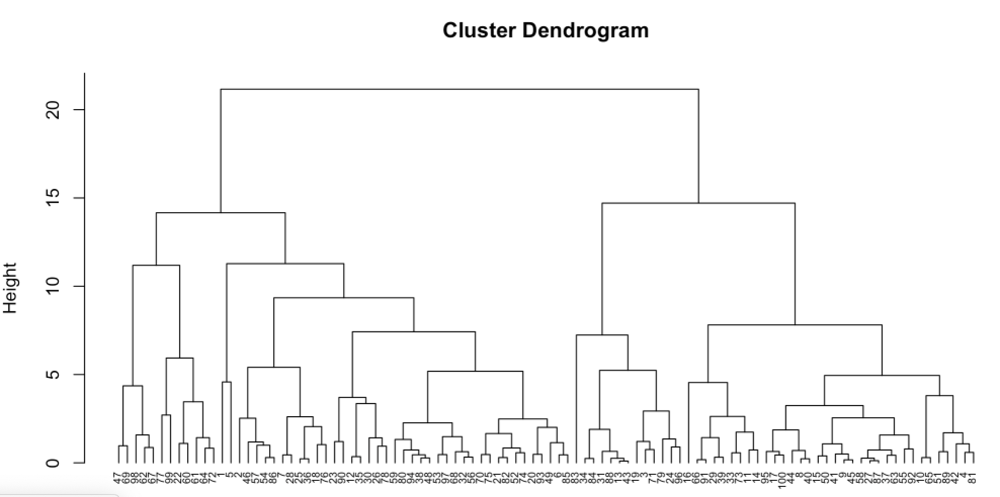
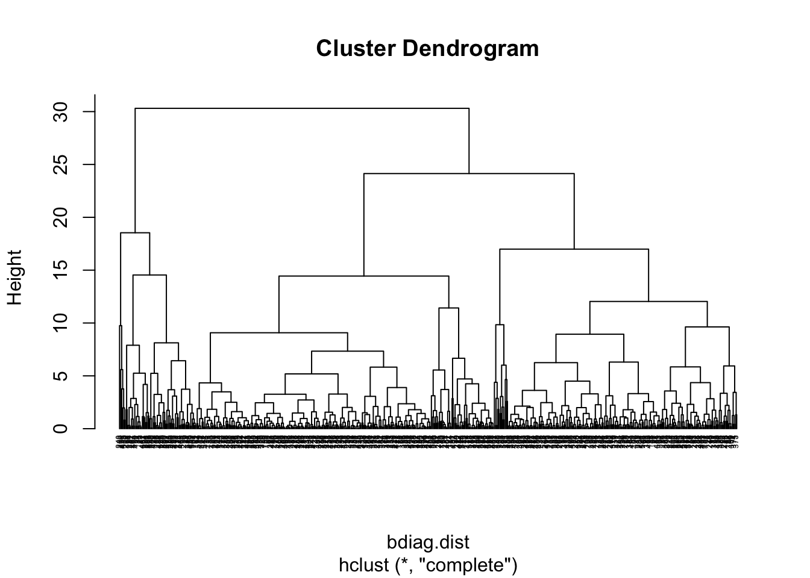
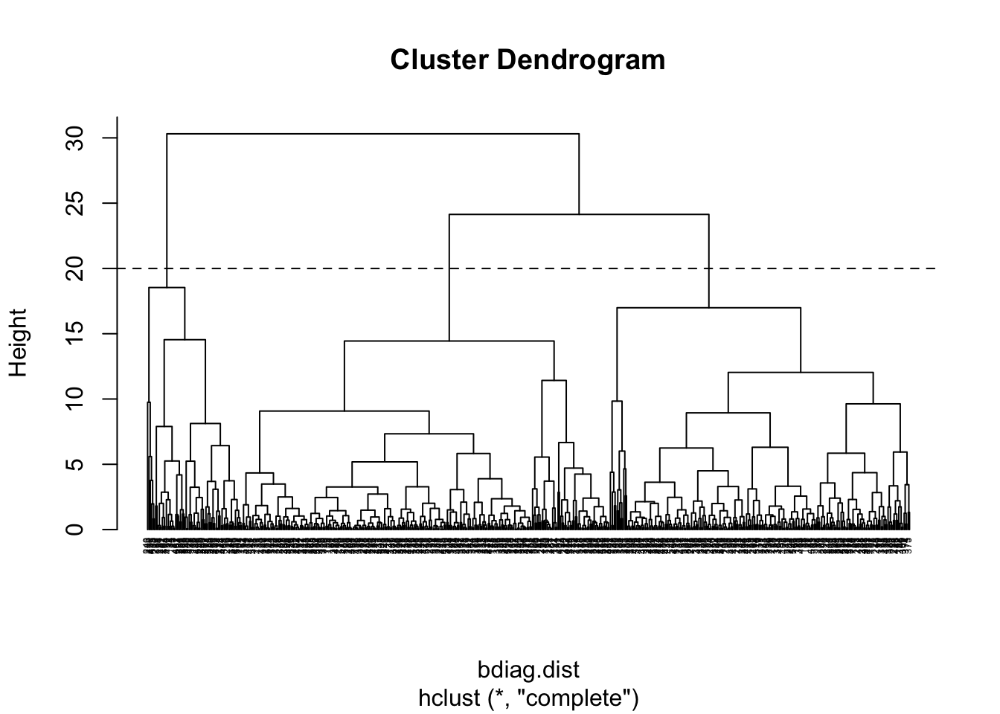
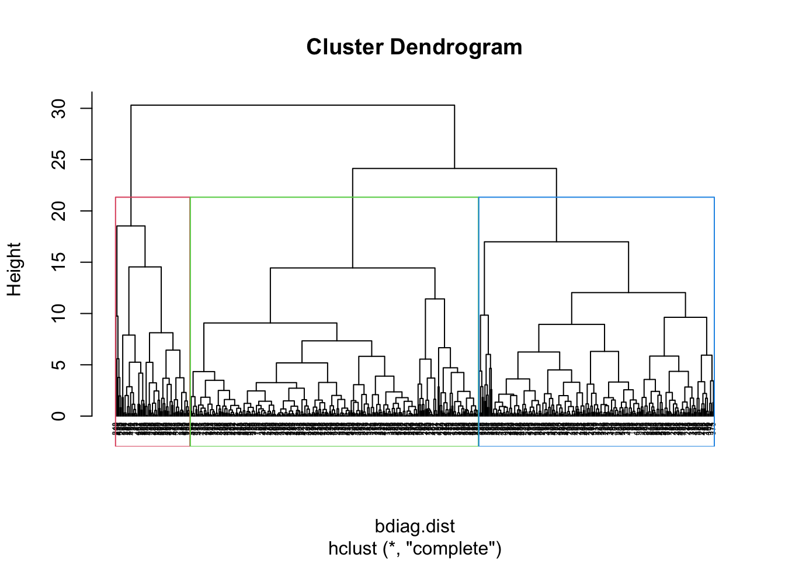
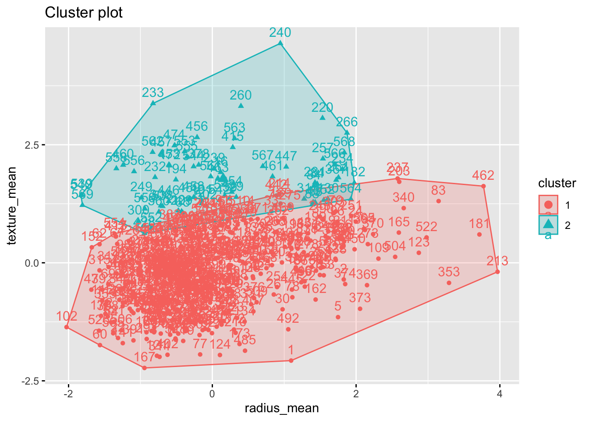

3 Hierarchical Clustering
3.1 Introduction
Hierarchical clustering is an alternative approach to k-means clustering,which does not require a pre-specification of the number of clusters.
The idea of hierarchical clustering is to treat every observation as its own cluster. Then, at each step, we merge the two clusters that are more similar until all observations are clustered together. This can be represented in a tree shaped image called a dendrogram.

The height of the branches indicate how different the clusters are. The distance between the groups is usually referred to as linkage. There are 4 types of linkage:
Complete linkage: It computes all pairwise dissimilarities between the data points in cluster A and cluster B. The maximum value of these dissimilarities is the distance between the two clusters.
Single linkage: Similar to complete linkage but it takes the smallest (minimum) dissimilarity as distance between the two clusters.
Average linkage: It computes all pairwise dissimilarities between the data points in cluster A and cluster B and considers the average of these dissimilarities as the distance between the two clusters.
Centroid linkage clustering: It computes the dissimilarity between the centroid for cluster A (a mean vector of length p variables) and the centroid for cluster B.
Complete and average linkage are more commonly used methods. In terms of dissimilarity measure, we will use the Euclidean distance but there are other options.
3.2 Readings
Read the following chapters of An introduction to statistical learning:
12.4.2 Hierarchical Clustering
12.4.3 Practical Issues in Clustering
3.3 Practice session
Task 1 - Identify clusters
Using the bdiag.csv, let’s use 2 of the variables that characterise the cell nuclei: radius_mean and texture_mean and build a dendrogram
We will use the function hclust() to build the dendrogram and the
function dist that computes the distances between observations:
#read the dataset
bdiag.data <- read.csv("https://www.dropbox.com/s/vp44yozebx5xgok/bdiag.csv?dl=1",
stringsAsFactors = TRUE)
#select a subset of the variables
bdiag.2vars <- bdiag.data[,c("radius_mean", "texture_mean")]
#distances between the observations
bdiag.dist <- dist(bdiag.2vars, method = "euclidean")
#### what is dist() doing?##################################
bdiag.dist[1] #is the distance between obs1 and obs2## [1] 7.82742## radius_mean texture_mean
## 1 17.99 10.38
## 2 20.57 17.77 sqrt((bdiag.2vars[1, 1] - bdiag.2vars[2,1 ])^2 +
(bdiag.2vars[1, 2] - bdiag.2vars[2,2 ])^2 ) #Eucl distance## [1] 7.82742 #############################################################
#Dendrogram using the complete linkage method
bdiag.ddgram <- hclust(bdiag.dist, method="complete")
#Plot the dendrogram
#the option hang = -1 will make the
#labels appear below 0
plot(bdiag.ddgram, cex=.4, hang = -1)
If we cut the tree at the height of 20, we get 3 clusters

We can draw a rectangle around the 3 clusters

And obtain the cluster for each observation
## group3
## 1 2
## 498 71
TRY IT YOURSELF:
- Get 2 clusters with hierachical clustering using the variables age, weight, height, adipos, free, neck, chest, abdom, hip, thigh, knee, ankle, biceps, forearm and wrist. and compare the clustering result with the observed diagnosis
See the solution code
#select a subset of the variables
bdiag.10vars <- bdiag.data[,c("radius_mean", "texture_mean",
"perimeter_mean", "area_mean",
"smoothness_mean", "compactness_mean",
"concavity_mean", "concave.points_mean",
"symmetry_mean", "fractal_dimension_mean")]
#distances between the observations
bdiag.dist10 <- dist(bdiag.10vars, method = "euclidean")
#Dendrogram using the complete linkage method
bdiag.ddgram10 <- hclust(bdiag.dist10, method="complete")
plot(bdiag.ddgram, cex=.4, hang = -1)
- How does the clustering changes with different linkage methods?
See the solution code
#select a subset of the variables
bdiag.10vars <- bdiag.data[,c("radius_mean", "texture_mean",
"perimeter_mean", "area_mean",
"smoothness_mean", "compactness_mean",
"concavity_mean", "concave.points_mean",
"symmetry_mean", "fractal_dimension_mean")]
#distances between the observations
bdiag.dist10 <- dist(bdiag.10vars, method = "euclidean")
#Dendrogram using the complete linkage method
bdiag.ddgram10.comp <- hclust(bdiag.dist10, method="complete")
bdiag.ddgram10.sing <- hclust(bdiag.dist10, method="single")
bdiag.ddgram10.aver <- hclust(bdiag.dist10, method="average")
bdiag.ddgram10.cent <- hclust(bdiag.dist10, method="centroid")
bdiag.2vars$cluster.comp <- cutree(bdiag.ddgram10.comp, k = 2)
bdiag.2vars$cluster.sing <- cutree(bdiag.ddgram10.sing, k = 2)
bdiag.2vars$cluster.aver <- cutree(bdiag.ddgram10.aver, k = 2)
bdiag.2vars$cluster.cent <- cutree(bdiag.ddgram10.cent, k = 2)
table(bdiag.2vars$cluster.comp, bdiag.2vars$cluster.sing)
table(bdiag.2vars$cluster.comp, bdiag.2vars$cluster.aver)
table(bdiag.2vars$cluster.comp, bdiag.2vars$cluster.cent)
3.4 Exercises
Solve the following exercises:
- The dataset fat is available in the library(faraway).
The dataset contains several physical measurements.
Using the variables age, weight, height, adipos, free, neck, chest, abdom, hip, thigh, knee, ankle, biceps, forearm and wrist
Plot 3 clusters produce by hierarchical cluster based on the two principal components of the data?
Compare the result above with the clusters obtained using all the variables.